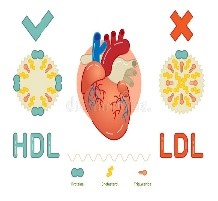
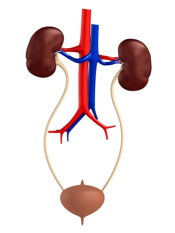
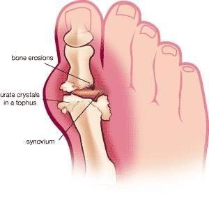
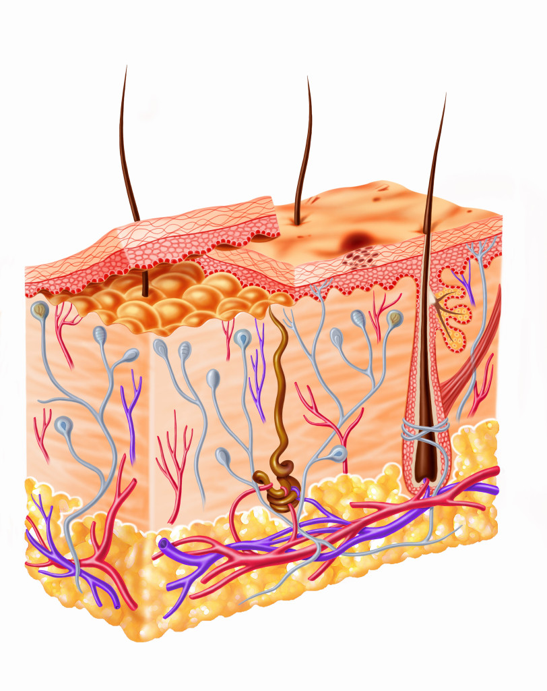

Scientific name:Prunus dulcis
Hindi name: Badam
Ayurvedic Property
Rasa–Madhur Vipak–Madhur Veerya-Ushna Guna-Snigdha, guru Prabhaw-Medhya
Medicinal Uses |
|
|---|---|
| Name | Description |
 Diabetes |
Diabetes-Low glycemic index and rich in fibre so good for low carb diet in Diabetes. It contain micro nutrient like Magnesium and manganese help in various metabolic activities reduce the risk of diabetes. |
 Cardiac problem |
Contain monounsaturated fat lowers cholestrol and have cardio protective properties. High cholestrol - It contains Phytonutrients plant sterol and flavanoids so it is a good anti oxidant and lower cholestrol level. |
 Anti-Oxidant |
Anti-oxidant-Contain a good amount of Vit E so it have a good anti-oxidant property. |
 Bones |
- Osteo arthritis and Osteo sporosis-It contain a good amount of calcium so give stregth to bones and teeth. |
 Blood |
Anemia - It also contain iron so help in blood formation. |
Brain |
Alzheimer’s Disease- Almonds are a good choice, as they're higher than any other food in alpha-tocopherol vitamin E, the form of vitamin E that the body absorbs and uses best. |
 Obesity |
Supports Weight Loss There are multiple mechanisms by which Almond encourage weight loss. The fibre and protein in Almond promotes feelings of satiety. Although Almond are high in calories, some of the fat in Almond is resistant to digestion and not fully absorbed by the body. Consumption of Almond also results in higher resting energy expenditure, increasing overall calorie burn. Including Almond in a meal plan for weight loss can make it easier to reach your goals. |
Scientific name:Ficus carica
Hindi name: Anjeer
Ayurvedic Property
Rasa–Madhur Vipak–Madhur Veerya-Sheeta Guna-Snighda, guru
Medicinal Uses |
|
|---|---|
| Name | Description |
 Constipation |
It contains cellulose, that increase the excretion of stools by increasing the water content and bulk and it also elevates the viscosity. Anjir fruit pulp paste increase the intestinal peristalsis, and give relief in chronic constipation. Three pieces of anjeer have 5 grams of fibre. Fiber enables healthy and regular bowel management. These are quite useful not just in treating constipation, but also in indigestion, stomach-ache, and various other intestinal problems. How to Use: Soak 2-3 anjeer dry fruits in water overnight. Consume the soaked anjeer with honey to relieve the problem of constipation. |
Type-2 Diabetes |
Diabetes Mellitus Anjeer fruits and leaves have been extensively used in the management of plasma glucose level. They contain healthy compounds such as polyphenols, flavonoids, and antioxidants that play an important role in the treatment of type 2 diabetes mellitus. These flavonoids have antihyperglycemic properties that alter glucose and oxidation metabolisms. Flavonoids present in them modulate glucose transport and significantly decrease elevated plasma glucose level. Ferulic acid is a predominant phenol compound that suppresses high plasma glucose level and alleviates oxidative stress. Antioxidants present in anjir neutralize the harmful free radicals and combats oxidative stress. Anjeer Leaves are more beneficial than anjeer fruits. Anjeer leaves help in supporting functional control of diabetes. The leaves regulate the amount of sugar captivated into the body after meals. Blood sugar alteration rate may become less frequent. |
Muscle, spasm and cramp |
Research has shown that dried anjeer help in relaxing the gut. This property is attributed to the presence of ALKALOIDS, FLAVONOIDS, COURMARINS, SAPONINS, and TERPENES. It has also shown to have an anti-spasmodic effect, that is, it helps to relieve spasm of muscles. Anjeer also inhibits contractions and thus, helps the muscles to relax. Because of its anti-spasmolytic effect, it has also been recommended for the treatment of different hyperactive gastrointestinal disorders such as diarrhea and abdominal pain. |
Immuno booster |
Boosts Immune System Anjeer has a very rich nutrient profile, that is, it is an important source of many vitamins, minerals, phenolic compounds, antioxidants, and flavonoids. The presence of so many health-promoting compounds in anjir helps to modulate the immune response and alleviates diseases. The Total White Blood Cell Count also increased in a group treated with anjir fruit extract. This increase may be related to the presence of phenolic compounds such as CAROTENOIDS, FURAN-OCOUMARINS, PSORALEN, and ANGELICIN. These phenolic compounds strengthen the immune system and boost the production of white blood cells. |
Hepato protective |
Anjeer fruit and anjir tree leaf extract are effective in the treatment of liver diseases and thus, restores the liver cell function and normalizes the liver structure. Another research has shown that anjeer tree leaf extract exhibits a significant protective effect against PARACETAMOL induced liver damage. |
|  High cholestrol |
High Triglyceride Level Anjeer tree leaf extract has hypolipidemic activities and it helps in lowering plasma cholesterol and triglyceride levels but increased the plasma levels of HDL – high-density lipoprotein cholesterol (good cholesterol). Such an increase in HDL cholesterol level protects the heart and keeps cardiovascular diseases at bay. The leaf extract increases the production of APOLIPO-PROTEIN A-1 and modifies remodeling of HDL particles within the blood vessels. In addition to this, APOLIPO-PROTEIN A-1 also contributed to anti-inflammatory and antithrombogenic (prevents the formation of a clot and thus, protects against heart diseases) properties. Therefore, it also cuts the risk of coronary heart diseases. |
Blood |
Anemia It has been found that both dried and fresh anjeer fruits contain protein. Iron and protein are necessary for the formation of hemoglobin and presence of both these nutrients make it a perfect fruit for hemoglobin synthesis. The presence of so many nutrients and health-promoting compounds are necessary for the process of blood cell formation (hematopoiesis). Thus, anjeer fruit benefits in improving the hematological parameters. |
Anti-microbial property |
Antimicrobial Properties Many studies have reported anti-microbial and anti-viral activities of anjeer tree. The antibacterial activity of anjeer tree leaves extracts showed strong activity against – GORDONII – gram-positive bacteria that causes dental problems ANGINOSUS – causes build-up of pus (abscess) in the brain or liver INTERMEDIA – causes inflammation of tissue around teeth and gums P. GINGIVALIS – a gram-negative bacteria that causes inflammation of tissue around teeth and gums |
Teeth and gums |
Some of the phenolic compounds present in anjeer exhibits anti-caries activity. This activity is due to the ability of its extract to inhibit oral bacteria. Furthermore, the presence of flavonoids in it exhibits anti-bacterial properties and thus, protects against the harmful action of bacteria. Therefore, the presence of flavonoids and phytochemicals in this fruit play an important role in reducing the oral bacterial infection and thus, provides protection to gums, teeth and overall tissue of the oral cavity. Therefore, anjir can be employed as a natural anti-bacterial agent in oral care products. |
Fever and debility |
Studies have found that anjeer leaf extract has a significant anti-pyretic effect, that is, is helps in lowering the body temperature in case of fever. The effect of leaf extract was similar to PARACETAMOL, a drug used in the treatment of fever. Anjir fruits are beneficial in the treatment of debility after fevers or chronic diseases. |
Oedema |
Fluid Overload or Oedema Anjeer fruit extract has shown to exhibit natural diuretic property. A research found that its fruit extract increased the total volume of urine and concentration of electrolytes such as sodium, chloride, and potassium in the urine. Its effect was similar to a diuretic named FUROSEMIDE. |
Energy Booster |
Source of Energy Dried Anjeer is the excellent supplements of iron, which is required in our body for delivering oxygen in the blood cells. Inadequate intake of iron can result in tiredness, weakness and makes us more vulnerable to infections by affecting the functionality of the immune system. |
Weight management |
Reducing or Increasing Weight – For Nutritional Support Since Anjeer has multiple nutrients, dieticians recommend a small quantity of these fruits to overweight people as it helps to boost their weight loss program. However, when consumed with milk the high-calorie level of milk combined with anjir can result in weight gain at the desired places. It also contains a high amount of sugar content, so its intake should be restricted to 1 to 2 anjeer fruits a day. |
Throat Infection |
Relief for Throat Pain and Other Problems Anjeer helps in healing as well as prevention from sore throats due to mucilage content. Anjeer and its natural juice can also reduce the pain and stress on the vocal chords. It is also used for fever, earache, boils, abscesses, etc. |
Mouth Ulcer |
Mouth Ulcer Having a cup of milk mixed with a teaspoon of powdered Anjeer can act as a quick cure for mouth ulcers. |
Cough and Asthma |
Breathing Difficulties The adequate amount of essential nutrients such as proteins, minerals, vitamins, fibre and carbohydrates found in anjeer, can keep the respiratory system hydrated. It helps in clearing the chronic cough and other obstructions. That is why most dieticians prescribe anjir for various respiratory disorders. 1 to 2 soaked anjeer will be sufficient for breathing troubles and asthma. Clinically, it works when you feel weakness, fatigue or tiredness, especially breathing difficulty due to excessive exertion or physical weakness. Otherwise, it is also good to eat, but as a nutritious tonic for the respiratory system. The patient may require other remedies to control breathing troubles if weakness or respiratory fatigue is not the cause. |
Sleep problems |
Anjeer dry fruits are also recommended for the patients suffering from insomnia. It contains tryptophan, which encourages adequate and good sleep by stimulating proper blood circulation all over the body. |
Loss of libido and infertility |
Infertility Anjeer fruits have been used traditionally to treat people having infertility. Anjeer has a good nutritional value, which helps to balance hormones. Anjeer can enhance energy and stamina. Soaking a couple of Anjeer dry fruits in milk overnight and consuming them in next morning regularly can increase the vitality and fertility. |
Warts |
Fig Tree Latex in Common Warts Anjeer tree latex is beneficial for common warts. It is applied over warts that reduce the size of the mass of warts. It is effective short duration therapy. |
Colon Cancer |
Prevention of Colon Cancer Fiber present in anjeer helps in flushing out the harmful toxins from the physical structure and promotes the excretion of free themes and other cancer (particularly colon). Some antioxidants like flavonoids and polyphenols present in anjir fruits help in preventing the damage caused by free radicals. |
Breast cancer |
Post-Menopausal Breast Cancer Prevention Fiber quantity in Anjeer fights against breast cancer in adult females. After menopause, the hormones in the body fluctuate frequently and these fluctuations influence the immune system, which influences the ability of antioxidants to fight free radicals (major sources of the development of cancer). Thus, intake of anjir is advisable for prevention of post-menopausal cancer. |
High Blood Preassure |
Prevention of High Blood Pressure Anjeer contains high quantity of potassium while they are low in sodium content. This is the reasons it can help in resisting the emergence and effects of hypertension. The proper intake of potassium enables diminishing the effects of sodium, thereby lowering the blood pressure. Boiling three Anjeer leaves in a cup half of water and drinking the solution can lower the blood pressure, settle the nerves and bring some tranquillity at once. |
 Veneral Disease |
Nutritional Support in Venereal Diseases The presence of nutrients in anjeer benefits our health by curing the venereal diseases. Direct intake or topical application can render the prevention of venereal diseases. |
Bones |
Give Strength to Bones Anjeer is rich in phosphorus, which promotes bone formation and encourages re-growth in case of degradation of bones. However, the calcium content in it helps to fortify the bones. It should be a part of the daily intake of growing children. |
Skin tonic |
Skin Diseases Anjeer is also used for skin problems as it helps in removing wrinkles as well as dark circles under the eyes. The high enzyme and vitamin C content removes the impurities and dead skin. Regular intake of anjir can provide a youthful and radiant glow to the skin. |
|  Urinary System |
Urinary Problems The amount of potassium present in anjeer washes away harmful toxins from our body through urine. It also reduces the uric acid level by increasing uric acid secretion. It helps in regulating the content of the waste in urine also. |
 Eye |
Prevention of Deterioration Anjeer helps in preventing eye problems, the vision of loss and the other diseases related to macular degeneration. Moreover, it is referenced as good snack options to avoid symptom of early aging. |
Scientific name:Prunus avium
Hindi name: Cherry
Ayurvedic Property
Rasa–Madhur, Amla Vipak–Madhur Veerya-Ushna Guna-Snighda, Laghu
| Medicinal Uses | |
|---|---|
| Name | Description |
Anti-oxidant |
Cherries are full of antioxidants Cherries are a potent source of antioxidants and anti-inflammatory compounds. These cellular body guards slow down aging and ward off chronic illnesses—including heart disease, cancer, Alzheimer’s, diabetes, and obesity. |
Diabetes |
They protect against diabetes The anti-inflammatory effect of cherries helps keep your body healthy; but what's more, cherries rank lower than many fruits on the glycemic index. That means they don’t trigger spikes and crashes in your blood sugar and insulin levels. This makes them both protective against diabetes, and important for managing the condition if you already have it. |
Sleep |
They promote healthy sleep Tart cherries in particular are one of the few food sources of melatonin, a hormone that helps control your sleep-wake cycles. One study in men and women with insomnia found that compared to a placebo, eight ounces of tart cherry juice in the morning and again one to two hours before bed increased sleep time by an hour and 24 minutes. |
 Arthritis |
They can provide arthritis relief Several studies have suggested that cherry consumption is beneficial for osteoarthritis sufferers. Regularly incorporating cherries or 100% cherry juice into your meal or snack routine may help lessen your joint pain. |
|  Gout |
They lower the risk of gout attacks Over eight million adults in the U.S. suffer from gout. This inflammatory arthritis is triggered when a waste product called uric acid crystallizes within the joints, causing excruciating pain and swelling. In one study, gout patients who consumed cherries for just two days (both the fresh fruit, as well as cherry extract and juice) showed a 35% lower risk of gout attacks compared to those who did not eat cherries. |
High Cholestrol |
They curb cholesterol Research has shown that drinking tart cherry juice can help lower total cholesterol, including the “bad” type, known as LDL. That’s key because every 1% reduction in cholesterol lowers the risk of heart disease by 2%. And a high LDL is particularly worrisome in relation to heart attack risk. |
Post exercise pain |
They reduce post-exercise pain In other words, cherries can make that post-HIIT workout soreness less intense. They also protect against the cellular wear and tear from exercise, and help support muscle recovery. For this reason tart cherry juice is popular with professional and competitive athletes. But it can help anyone who’s regularly active. |
How to max out the health benefits of cherries
There's nothing like a bowl of fresh cherries when they're in season. But that's not the only way to embrace their nutritional perks. Look for frozen cherries, freeze-dried powders, 100% tart cherry juice, and preservative-free dried cherries.
Whip frozen cherries or powder into smoothies, or add it to overnight oats. Stir chopped dried cherries into nut butter or melted dark chocolate, or sprinkle onto salads and cooked veggies. Add tart cherry juice to sparkling water. Or drink it straight up if you're struggling with sleep, or want exercise recovery benefits. Making cherries and cherry products a staple part of your diet is a small shift that may snowball into big-time health benefits.
Scientific name:Phoenix dactylifera
Hindi name:Khajoor/Khajur

Ayurvedic Property
Rasa–Madhur, Kashya Vipak–Madhur Veerya-Sheet Guna-Snighda, guru
Medicinal Uses |
|
|---|---|
| Name | Description |
Diabetes |
Prevention And Control Of Diabetes Mellitus
Dates make a healthy substitute for white sugar due to the nutrients, fibre and antioxidants they provide. They’re full of natural sugar, yet they’re low on the glycaemic index. This means, they don’t take your blood sugar for a wild ride like refined sugar does. One study found that consumption of dates resulted in a significant reduction in postprandial glucose excursions. The research concluded that, in spite of having high sugar content, date consumption had beneficial effects on serum triacylglycerol and oxidative stress and did not worsen serum glucose and lipid / lipoprotein patterns. In addition, date seed extract has a hypoglycaemic effect. It is observed that when date fruit is given in combination with insulin, blood glucose levels decrease significantly toward normal as compared to the effect of insulin administered as a single drug for treatment of diabetes. Dates are loaded with fibre so they have a positive effect on the functioning of the gastrointestinal tract. They support weight reduction, improve disturbances of carbohydrate and fat metabolism, and help in reducing the risk of type 2 diabetes. Dates provide protection against deterioration of the peripheral nerve due to its anti-oxidative property. That’s how they have a preventative approach towards peripheral diabetic neuropathy.8 In addition, dates are loaded with abundant vitamins and minerals which are beneficial for people with diabetes. Some of the vitamins present in dates and their action in cases of diabetes are given here. Vitamin A helps retain your eyesight by fighting against diabetic retinopathy. Vitamin B1 protects against nerve damage. Vitamin B2 improves your body’s metabolism. Vitamin B6 helps treat diabetic neuropathy. Vitamin B5 prevents burning sensations in the feet. Vitamin K activates proteins and calcium which help in clotting of the blood. Manganese regulates your body’s blood sugar levels. Copper reduces many biochemical problems like excessive tissue oxidation and protein damaging glycation. Magnesium prevents chances of getting type 2 diabetes. |
Protects heart and control hyper-tension |
Promotes Heart Health Due to the richness in magnesium and potassium, dates significantly reduce blood pressure and helps prevent the chances of stroke. One study showed that healthy women who eat around 3,200 mg of potassium a day have a 21 percent lower risk of stroke. High levels of triglycerides increase the risk of heart disease. According to another study, the consumption of dates reduced blood triglyceride levels and showed a positive impact on heart muscles by 8 percent among participants. Dates have significantly higher anti-atherogenic potency. They inhibit LDL oxidation, and stimulate cholesterol removal from macrophages. They quite efficiently reduce cholesterol naturally, particularly LDL (“bad”) cholesterol. |
Bones |
Promotes Bone Health Dates are full of essential minerals like selenium, manganese, copper, magnesium, phosphorus and calcium. These are required to keep bones healthy and strong and help prevent painful debilitating condition like osteoporosis. Aids In Post-menopausal Conditions As dates are rich in magnesium, they lower the concentrations of certain markers of systemic inflammation and endothelial dysfunction in post-menopausal women. Research studies concluded that an anti-inflammatory diet helped in reducing the loss of bone mineral density in some postmenopausal women. As dates are rich in magnesium which is anti-inflammatory, they potentially prevent osteoporosis problems. |
 Prevents cancer |
A Potential Cancer Preventive Research shows that regular intake of dates as a staple food prevents the chances of cancer. Due to the presence of high magnesium and selenium content it calms inflammation. Antioxidants present in dates help in fighting free radicals and oxidation of cells. Thereby consumption of dates is capable in reducing colon cancer risk. |
Sexual-health |
Cures Sexual Weakness Date palm pollen has high levels of oestradiol and flavonoid components which seems to cure male infertility by improving sperm count, motility, morphology, and DNA quality with a concomitant increase in the weights of testis and epididymis. They are a natural aphrodisiac, and thus can increase sexual stamina. |
Helps in labor |
Facilitates Labor Dates potentially promote and ease late-term labor in pregnant women. It was seen in a research study that the consumption of dates in the last four weeks before labor significantly reduced the need for induction and augmentation of labor, and produced a more favorable delivery outcome. |
 Gastro protective |
Vitamin C, which is also vital for the proper function of a healthy immune system, is good for preventing colds and preventing recurrent ear infections. |
Constipation |
Facilitates Easy Bowel Movements More fibre aids in digestion by softening and increasing the weight and size of your stool. Bulkier stools are easier to pass and can prevent constipation. Fiber also keeps you full for longer because it slows down the emptying of the stomach. Dates act as very effective laxatives. They have high level of soluble fibre, which is essential in promoting healthy bowel movements and the comfortable passage of food through the intestinal tract, which can relieve the symptoms of constipation. |
Blood |
Prevents And Cures Anemia Iron is the key component of hemoglobin in RBC and its deficiency results in Iron Deficiency Anemia. Dates have significant amounts of iron. They promote strength and reduce the feeling of fatigue associated with anemia. A research study conducted on children suffering from iron deficiency anaemia found that intake of black dates resulted in increase in their hemoglobin, hematocrit, red blood cell, mean corpuscular volume, mean corpuscular hemoglobin, serum iron, serum ferritin and transferrin saturation levels. |
Boosts Energy |
Boosts Energy Dates are an almost ideal food, providing a wide range of essential nutrients and potential health benefits. They are a good source of energy, due to their high natural sugar content like glucose, fructose, and sucrose. These sugars can be easily processed and utilized by the body for an instant burst of energy when needed. |
Improves brain function |
Improves Brain Activity, Strengthens Nervous System
Date palm fruits provide protection against inflammation and oxidative stress in the brain. Potassium is one of the prime ingredients in promoting a healthy and responsive nervous system and it also improves the speed and alertness of brain activity. The vitamins present in dates make it an ideal boost to the nervous system health and functionality. Dates are helpful for lowering the inflammatory marker interleukin 6 (IL-6) in the brain which is responsible for causing Alzheimer’s disease. Apart from this, a diet rich in dates improves memory, learning ability, and has beneficial effects in lowering the risk, delaying the onset or slowing down the progression of Alzheimer’s disease. Regular consumption of these fruits is helpful in reducing the activity of amyloid beta proteins which can form plaques in the blood vessels and outside the neurons of the brain leading to neural death. Their consumption is also associated with lower risk of neurodegenerative disorders and better cognitive performance in elderly people. |
 Anti-ageing |
Possess Anti-Aging Effects Dates are rich in antioxidants which fight free radicals in our body, stabilizes them and prevents them from causing damage. Regular and moderate consumption of dates is very effective for reducing fine lines, wrinkles, age spots and dark spots and thus prevents premature aging. Dates are a good source of vitamin B5 or pantothenic acid and this makes them beneficial for repairing damaged skin cells. |
You can increase nutrional value of food by adding it in recepies like Kheer, Sebai, Milk .
Ayurvedic preperation – Panch mewa.
Scientific name:Anacardium occidentali
Hindi name: Kaju
Ayurvedic Property
Rasa–Kashya, Amla Vipak–Madhur Veerya-Sheeta Guna-Snighda, guru
Medicinal Uses |
|
|---|---|
| Name | Description |
Cancer |
Protects against cancer: Cashews are brimming with proantho-cyanins, a type of flavanol that starves tumours and prevents cancer cells from dividing. |
Protects Heart |
Cuts heart disease risk: The oleic acid found in cashews promotes sound cardiovascular health by reducing triglyceride levels, which is associated with heart disease risk. |
Strenthen Bones |
Improves bone and joint health: Cashews’ magnesium and copper content work in concert to strengthen bone mass. Most of the magnesium in your body is stored in the bones, so if you’re deficient, your bones will suffer. Copper helps keep bones and joints flexible by synthesizing collagen and elastin. |
Relaxes Nerves |
Relaxes nerves: Magnesium in cashews prevents calcium from over-activating nerve cells, therefore relaxing them. This action keeps your blood vessels and muscles relaxed as well. (You may notice that if your magnesium levels are low, you often get muscle cramps.) |
|  Skin and hair |
Keeps skin and hair healthy: The copper in cashews helps to manufacture various enzymes involved in haemoglobin and collagen formation. Collagen is the main structural protein found in hair and skin that gives it elasticity – so you can think of copper as one of the precursors to your luscious locks. |
Manage Weight |
Aids in weight loss and maintenance: Cashews contain less fat than other popular nuts including peanuts, pecans, almonds, and walnuts. Yet what makes them a winning “weight loss nut” is that they are nutrient- and energy-dense, and high in fibre, which makes them more filling — a boon for managing weight. |
Diabetes |
Prevents diabetes: Most recently, a study found that cashews reduced systolic blood pressure and increased HDL cholesterol concentrations in people with diabetes. |
Add nutritional value of diet
You can increase nutritional value of food by adding it in recipes like Kheer, Sebai, Milk, Fried rice .
Ayurvedic preparation – Panch mewa
Scientific name: Vitis vinifera
Hindi name: Kismis
Ayurvedic Property
Rasa–Madhur Vipak–Madhur Veerya-Ushna Guna-Snighda, guru
Medicinal Uses |
|
|---|---|
| Name | Description |
Consti-pation |
Relief From Constipation: Raisins contain fibres which swell in the presence of water, hence easing out the digestion process. They act as a laxative at these times, and free the constipation process. Kishmish also helps in stopping loose motions, by absorbing the liquid part of loose stools, thereby reducing the frequency of diarrhea. |
Cancer |
Prevention Of Cancer: Kishmish is rich in catechin. They are antioxidants which eat up the free radicals found in the body, thereby stopping the destruction of organ systems and cells. Kishmish in your diet, help in the growth of catechins in the body, thereby preventing cancer from forming in the first place, and halting its progress. |
Hyper-tension |
Fighting Hypertension: Potassium present in Kishmish reduces the tension built up in the blood vessels, thereby decreasing blood pressure. Even the dietary fibre in raisins helps reduce the stiffness of blood vessels, in the process, relieves you of hypertension. |
Diabetes |
Diabetes: Q. Can You Eat Raisins If You Are Diabetic? A. If you are a diabetic or diabetic-prone, then avoid eating raisins as they can cause high blood sugar levels and increase diabetic complications. It regulates the fluctuation of sugar level in blood. Resins help in regulating the release of leptin and ghrelin, the hormones which play a pivotal role in telling the body when it is hungry or full. Once the hormones are in check. This prevents overeating and improves the chances of living with diabetes in a better way, not a strained way. |
Anemia |
Anemia: Raisins are rich in complex-B vitamins and iron, which are the main constituents in helping to protect against anaemia. The production of red blood cells is also increased since raisins contain a good amount of copper. |
Eye |
Eye Care: Kishmish have phytonutrients, which are good for vision. Raisins shield our priceless eyes from the damaging effects of free radicals (or oxidants), which prevent macular degeneration, cataracts, and weakening of vision that happens with age. Besides their antioxidant qualities, raisins also have a considerable amount of vitamin A, A-Beta Carotene, and A-Carotenoid, all of which are important in boosting eye health. |
Bones |
Bone Health: Kishmish is rich in calcium and the micronutrient boron, which enhances bone formation and aids in the faster absorption of calcium. This way it gives strength to bones and teeth. |
Infection |
Treats Infections: The main cure to infections is to treat with anti-inflammatory antioxidants. Raisins contain polyphenolic phytonutrients which help in doing the same. So when there is an onset of an infection like fever, they work by killing the bacteria that causes it. |
Sexual health |
Reduces Sexual Weakness: Yes, it’s true that raisins are good to better your sex life. Raisins contain amino acids like Arginine, which increases the libido content in the body and induces arousal in women. Erectile dysfunction is another problem that it treats in men, and hence is very good for men in this matter. |
Dental health |
Does A Dental Care Check: Raisins contain oleanolic acid which is a phytochemical that strives to keep your teeth safe from the decay, cavities and other such problems. Raisins kill bacteria hence preventing their further growth in the mouth and keep the teeth in good shape. |
Scientific name: Euryale ferox
Hindi name: Makhana
Ayurvedic Property
Rasa–Madhur Vipak–Madhur Veerya-Ushna Guna-Snigdha, guru Prabhaw-Medhya
Medicinal Uses |
|
|---|---|
| Name | Description |
 Healthy food |
Apple fruit is notable for its impressive list of phytonutrients, and antioxidants. Studies suggest that its components are essential for optimal growth, development, and overall wellness. Additionally, they are also good in tartaric acid that gives tart flavour to them. Altogether, these compounds help the body protect from harmful effects of free radicals. Apple fruit contains good quantities of vitamin-C and β-carotene. Vitamin C is a powerful natural antioxidant. Consumption of foods rich in vitamin-C helps the body develop resistance against infectious agents and scavenge harmful, pro-inflammatory free radicals from the body. |
Constipation |
Apples are also an excellent source of fibre. Insoluble fibre in apple help in clearing stool. |
Diabetes |
Apples contains chromium, a mineral that is important in assisting insulin action. Insulin is the hormone that helps to regulate blood sugars, enabling sugar to be utilized for energy. Also, the apple peel contains a greater percentage of phytonutrients when compared to the flesh of the apple. Lastly, the peels can aid in satiety because they contain fibre. It has low glycaemic index so helps in reducing glucose level. |
Cardiac Problem |
Apples contain no saturated fats or cholesterol. About one-third of the fibre in apples is soluble, mainly pectin. A diet rich in soluble fibre can help to pull cholesterol out of the body. Potassium is an important component of cell and body fluids helps controlling heart rate and blood pressure; thus, counters the bad influences of sodium. |
Anti-oxidant |
Apples are rich in antioxidant phytonutrients flavonoids and polyphenolics. The total measured antioxidant strength (ORAC value) of 100 g apple fruit is 5900 TE. Some of the important flavonoids in apples are quercetin, epicatechin, and procyanidin B2. Apple fruit contains good quantities of vitamin-C and β-carotene. Vitamin C is a powerful natural antioxidant. Consumption of foods rich in vitamin-C helps the body develop resistance against infectious agents and scavenge harmful, pro-inflammatory free radicals from the body. |
Bones |
Apples also carry small quantities of minerals like potassium, phosphorus, and calcium. It helps in bone formation and prevent osteoporosis. |
Blood |
Apple fruit is an ideal source of B-complex vitamins such as riboflavin, thiamine, and pyridoxine (vitamin B-6). Together, these vitamins help as co-factors for enzymes in metabolism as well as in various synthetic functions inside the human body. It helps in blood formation |
Obesity |
Apples are low in calories; 100 g of fresh fruit slices provide just 50 calories. They, however, contain no saturated fats or cholesterol. And the fruit is rich in dietary fibre, which helps in reducing weight. |
Cancer |
Apple are rich in Quercetin is a type of phytochemical known as a flavonoid. Animal research and research using cell cultures have found that quercetin may help to protect against certain cancers and help to kill cancer cells . Notably, these types of studies can suggest possible helpful effects but they do not provide proof that such effects can be achieved in humans. The fibre also saves the colon mucous membrane from exposure to toxic substances by binding to cancer-causing chemicals inside the colon. The fruit is rich in dietary fibre, which helps prevent absorption of dietary-LDL or bad cholesterol in the gut. |
Scientific name: Arachis Hypogaea
Hindi name: Mungphali
Ayurvedic Property
Rasa–Madhur, Kashav Vipak–Madhur Veerya-Ushna Guna-Snighda, guru Prabhaw-Medhya
Medicinal Uses |
|
|---|---|
| Name | Description |
Health |
Prmote health- Peanuts are rich in energy (161 calories per 1Once) and contain health benefiting nutrients, minerals, antioxidants and vitamins that are essential for optimum health. Peanut kernels are a good source of dietary protein; compose fine quality amino acids that are essential for growth and development. The nuts are a rich source of minerals like copper, manganese, potassium, calcium, iron, magnesium, zinc, and selenium. |
Cardiac problem |
Protect Heart and lower cholestrol- They compose sufficient levels of monounsaturated fatty acids (MUFA), especially oleic acid. MUFA helps lower LDL or "bad cholesterol" and increases HDL or "good cholesterol” level in the blood. Research studies suggest that the Mediterranean diet which is rich in monounsaturated fatty acids help prevent coronary artery disease and stroke risk by favouring healthy serum lipid profile. Furthermore, studies suggest that resveratrol may reduce stroke risk through altering molecular mechanisms in the blood vessels (reducing susceptibility to vascular damage through decreased activity of angiotensin, a systemic hormone responsible for blood vessel constriction that would elevate blood pressure), and by increasing production of vasodilator hormone, nitric oxide. |
Improves Memory |
Alzheimer's disease - Peanuts are an excellent source of resveratrol, another polyphenolic antioxidant. Resveratrol has been found to have a protective function against cancers, heart disease, degenerative nerve disease, Alzheimer's disease, and viral/fungal infections. The nuts are packed with many important B-complex groups of vitamins such as riboflavin, niacin, thiamin, pantothenic acid, vitamin B-6, and folates. 100 g of peanuts provide about 85% of RDI of niacin, which contributes to health and blood flow to the brain. |
Diabetes melitus |
Improves Blood Sugar Control The natural fats in peanuts are effective at reducing the glycemic index of other foods being consumed at the same time. Peanuts help control both fasting blood sugars and post-postprandial levels (after a meal). |
Obesity |
Supports Weight Loss There are multiple mechanisms by which peanuts encourage weight loss. The fibre and protein in peanuts promotes feelings of satiety. Although peanuts are high in calories, some of the fat in peanuts is resistant to digestion and not fully absorbed by the body. Consumption of peanuts also results in higher resting energy expenditure, increasing overall calorie burn. Including peanuts in a meal plan for weight loss can make it easier to reach your goals. |
Stomach cancer |
Reduce the risk of stomach cancer- Research studies have shown that peanuts contain high concentrations of polyphenolic antioxidants, primarily p-coumaric acid. This compound has been thought to reduce the risk of stomach cancer by limiting the formation of carcinogenic nitrosamines in the stomach. |
Anti-oxidant |
Anti oxidant- The kernels are an excellent source of vitamin-E(α -tocopherol); containing about 8 g per100 g. vitamin-E is a powerful lipid soluble antioxidant which helps maintain the integrity of mucosa and skin by protecting from harmful oxygen free radicals. Recent research studies suggest that roasting/boiling enhances antioxidant bioavailability in the peanuts. It has been found that boiled peanuts have two and four-fold increase in isoflavone antioxidants biochanin-A and genistein content, respectively. |
Add nutritional value to diet
You can increase nutrional value of food by adding it in recepies like Kheer, Sebai, Milk, Fried rice or salad.
Ayurvedic preperation – Panch mewa
Scientific name: Juglans regia
Hindi name: Akhrot
Ayurvedic Property
Rasa–Madhur Vipak–Madhur Veerya-Ushna Guna-Snighda, guru Prabhaw-Medhya
Medicinal Uses |
|
|---|---|
| Name | Description |
Improves Heart |
Improve Heart Health According to the National Institutes of Health (NIH), walnuts are rich in omega 3 fatty acids that have been shown to help improve heart health. Fresh raw walnuts are rich in amino acid l-arginine, and monounsaturated fatty acids (72%) like oleic acid. It also contains essential fatty acids (EFAs), such as linoleic acid, alpha-linolenic acid (ALA), and arachidonic acids. The inclusion of these nuts in any diet can help prevent coronary heart diseases by favouring a healthy lipid supply. A study published in the journal Metabolism suggests that consuming walnuts significantly lowered the LDL (bad) cholesterol and increased the level of HDL (good) cholesterol in the participants. Researchers at the University of Munich Medical Center, Germany, found that consuming walnuts also reduced ApoB levels, a marker used to evaluate the risk for cardiovascular diseases. Reduce Inflammation - The polyphenolic compounds and phytochemical substances found in walnuts reduce the effects of inflammation in the body. This has beneficial implications in a number of realms, including cardiovascular and oncology health. |
Manage weight |
Manage Weight Walnuts help you feel full, which means that they increase satiety. Researchers from Harvard Medical School found that people who consumed shakes containing walnuts had an increased level of fullness during the day as compared to people who had placebo shakes. This study did, however, utilize a small size, so more research is needed to confirm these results. Regardless, the rich source of protein and fibre makes walnuts a healthy snacking option, especially for vegetarians. However, they should be consumed in moderate quantities as an excess of it could result in weight gain. |
Bones |
Boost Bone Health - Walnuts contain copper and phosphorus both of which are essential in maintaining optimal bone health. Essential fatty acids found in walnuts secure the bone health of the body. They may increase calcium absorption and deposition while reducing urinary calcium excretion. |
Brain health and mood |
Brain Health -
Walnut oil contains omega-3 fatty acids, which can help improve memory and focus, says a report published in the Journal of Nutrition, Health, and Aging. Omega-3 fatty acids, coupled with iodine and selenium ensure optimum functioning of the brain. These nuts are included in the Mediterranean diet and they are also known to give relief from cognitive disorders like dementia and epilepsy. Mood Booster - It is thought that insufficient amounts of omega-3 fatty acids (contained in walnuts and a few other foods), may cause hyperactivity, irritability, and tantrums. According to a 2016 study published in the Nutrients Journal, when healthy, non-depressed males were administered with walnuts, there was a significant improvement witnessed in their moods. Supplementing a child’s diet with these nuts compensates the deficit in EFAs and may help alleviate their mood. This is even applicable to people suffering from post-traumatic stress disorder (PTSD), who are battling depression and stress after trauma. |
Anti-oxidant |
Antioxidant Power - Walnuts rank second on the list of ‘antioxidant-rich’ foods, just under blackberries as per research conducted by a team of researchers from the University of Oslo, Norway. The rare, powerful antioxidants such as quinone juglone, the tannin tellimagrandin, and the flavanol morin present in walnuts have remarkable free-radical scavenging power. These antioxidants also help prevent liver damage due to chemicals. |
Consti-pation |
Cleanse Digestive System - This superfood helps to clean the internal digestive tract, aiding in detoxification by the removal of toxins and waste. It also cures constipation. Lead researcher Lauri Byerley, associate professor at the Louisiana State University in the United States, said in her research report that walnuts help the gut and have prebiotic properties. Eating walnuts daily increased Lactobacillus, Ruminococcus, and Roseburia which improved the gut function |
Sexual health |
Improve Male Fertility Walnuts have a positive impact on male fertility by improving sperm quality, quantity, vitality, and motility, noted by a study published in the journal Biology of Reproduction led by Wendie Robbins, Fielding School of Public Health, University of California. Improve Metabolism Walnut, along with EFAs, provides minerals like manganese, copper, potassium, calcium, iron, magnesium, zinc, and selenium to the body. These minerals help contribute to metabolic activities like growth and development, sperm generation, digestion, and nucleic acid synthesis. |
Facilitates labor |
Pregnant Women - The rich source of vitamin B-complex present in roasted unsalted walnuts is essential for fatal growth. A study, published in the European Journal of Epidemiology, stated that when mothers consumed a diet rich in nuts (including walnuts) during the first trimester of pregnancy, there was an improvement seen in the neurodevelopment of the child. However, more studies are awaited to corroborate this point. |
Regulates sleep |
Regulate Sleep This nut makes melatonin, a hormone that helps induce and regulate sleep. Melatonin is present in the bio-available form in these nuts. In a research report published in the 2005 journal Nutrition, laboratory rats who were fed walnuts showed an increase in blood melatonin concentrations as compared to rats who were fed a controlled diet without the nuts. So, it’s best to add walnuts to your dinner dishes to ensure a good, restful sleep. |
 Skin & hair |
Skin Care -
The vitamin E and F content in walnuts help in maintaining and protecting the skin from harmful free radicals. It also helps in preventing wrinkles and dry skin. Regular use of walnut-based products lightens the dark circles under eyes. Walnut scrubs act as a natural exfoliator and help keep the skin young and fresh. Hair Care - Walnuts are also responsible for healthy hair, as the high amounts of vitamins, minerals, healthy fats, and antioxidants strengthen hair follicles and make scalp dandruff free. They also provide thicker, longer and stronger hair. You could also use the husk of walnuts as a natural highlighter. |
Astrigent property |
Astringent Properties - Walnut oils have significant astringent properties. Toasted walnut oil has a rich, nutty flavour that helps bring aroma and flavour to the food. This flavour gives a pleasant taste, but only when it is used in moderation. It is used as a carrier/base oil in various therapies like aromatherapy, and massage therapy, as well as in the cosmetic and pharmaceutical industry. |
Immuno Booster |
Boost Immunity - Regular consumption of natural shelled walnuts helps in building a strong immune system, which can prevent the onset of various diseases. The rich source of antioxidants, as discussed above, is responsible for this benefit. |
Add nutritional value to diet -
You can increase nutrional value of food by adding it in recepies like Kheer, Sebai, Milk, Fried rice or salad.
Ayurvedic preperation – Panch mewa